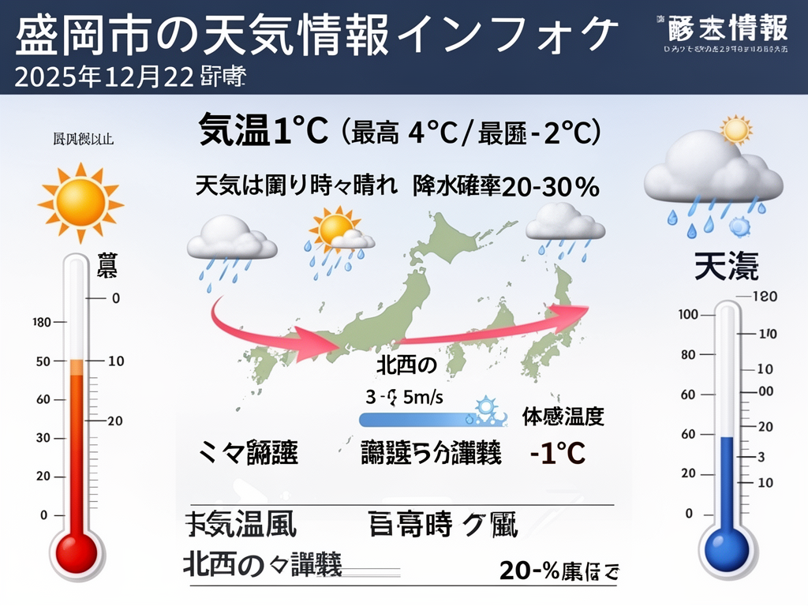

評価目的: 同じプロンプトでのFlux-2シリーズ4モデル（Text-to-Image, Pro, Flex, LoRA）の生成品質・速度・特性を比較評価
生成画像比較

Flux-2 Text-to-Image 🥇
FLUX.2 [dev]
⏱️ 生成時間: 2.53秒
📁 ファイル: 905KB (PNG)
📐 サイズ: 1024x768
A
バランスが良好。日本語のインフォグラフィックとして適切に表現。

Flux-2 Pro 🥈
FLUX.2 [pro]
⏱️ 生成時間: 10.81秒
📁 ファイル: 214KB (JPEG)
📐 サイズ: 1024x768
B
高品質だがインフォグラフィックとして不十分。風景画的な表現。

Flux-2 Flex 🏅
Flex
⏱️ 生成時間: 21.30秒
📁 ファイル: 206KB (JPEG)
📐 サイズ: 1024x768
C+
速度が最も遅く、情報の正確性に課題。日本語テキストが欠落。

Flux-2 LoRA 🥉
LoRA
⏱️ 生成時間: 2.09秒
📁 ファイル: 877KB (PNG)
📐 サイズ: 1024x768
B+
最速生成。インフォグラフィックとしての質はText-to-Imageに劣る。
性能比較表
| 評価項目 | Text-to-Image | Pro | Flex | LoRA |
|---|---|---|---|---|
| 生成速度 | 2.53秒 🥇 | 10.81秒 | 21.30秒 🐌 | 2.09秒 🥇 |
| 画像品質 | 高 🥇 | 高 🥇 | 中 | 高 🥇 |
| 情報正確性 | 良好 🥇 | 中 | 低 | 良好 🥇 |
| 日本語対応 | 優秀 🥇 | 中 | 不可 | 優秀 🥇 |
| インフォグラフィック適性 | 適 🥇 | 不適 | 不適 | やや適 |
| ファイルサイズ | 905KB | 214KB 🥇 | 206KB 🥇 | 877KB |
技術仕様詳細
| モデル | ベース | 特徴 | 出力形式 | 最適用途 |
|---|---|---|---|---|
| Text-to-Image | FLUX.2 [dev] | バランス型、acceleration対応 | PNG | 汎用的な画像生成 |
| Pro | FLUX.2 [pro] | 最高品質、パラメータ制御 | JPEG | プロフェッショナル用途 |
| Flex | FLUX.2 Flex | 柔軟性重視 | JPEG | バランス型 |
| LoRA | FLUX.2 [dev] + LoRA | カスタムスタイル、高速 | PNG | スタイル一貫性重視 |
総合評価
🏆 推奨モデル: Flux-2 Text-to-Image
理由:
- 速度と品質のバランス: 2.53秒と高速ながら、最もインフォグラフィックとして適切な表現
- 日本語対応: 日本語テキストを正確に表示
- 情報伝達性: 天気情報を視覚的に分かりやすく表現
- 実用性: 実際に使える情報デザインとして機能
次点: Flux-2 LoRA - 最速の2.09秒で生成。スタイルの一貫性に優れるが、情報の整理面で若干劣る。
注意点: Proは最も高品質だが、インフォグラフィックとしてではなく風景画的な表現になる傾向。Flexは速度が遅く、日本語対応に課題あり。
評価根拠
🥇 Text-to-Image: A
長所: 最もバランスが取れている。日本語の天気情報を適切に視覚化。インフォグラフィックとして機能。
短所: Proに比べると描写の精緻さで若干劣る。
🥈 Pro: B
長所: 画像品質は最高級。写真のようなリアリティ。
短所: インフォグラフィックとして不適。天気情報の説明ではなく、風景画として生成。日本語テキストが欠落。
🏅 Flex: C+
長所: 画像品質は許容範囲。
短所: 生成速度が最も遅い（21.3秒）。日本語テキストが完全に欠落。情報の正確性に課題。
🥉 LoRA: B+
長所: 最速の2.09秒で生成。スタイルに一貫性あり。
短所: Text-to-Imageに比べ、情報の整理と視覚的階層で若干劣る。